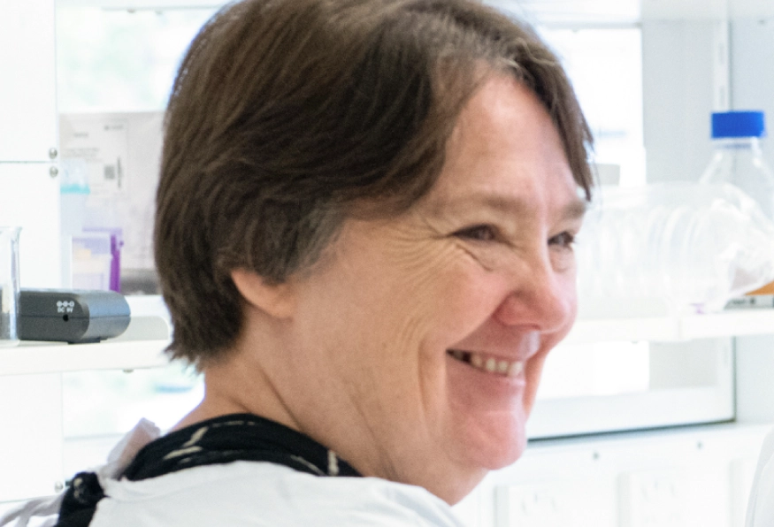
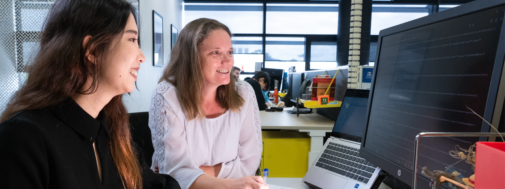
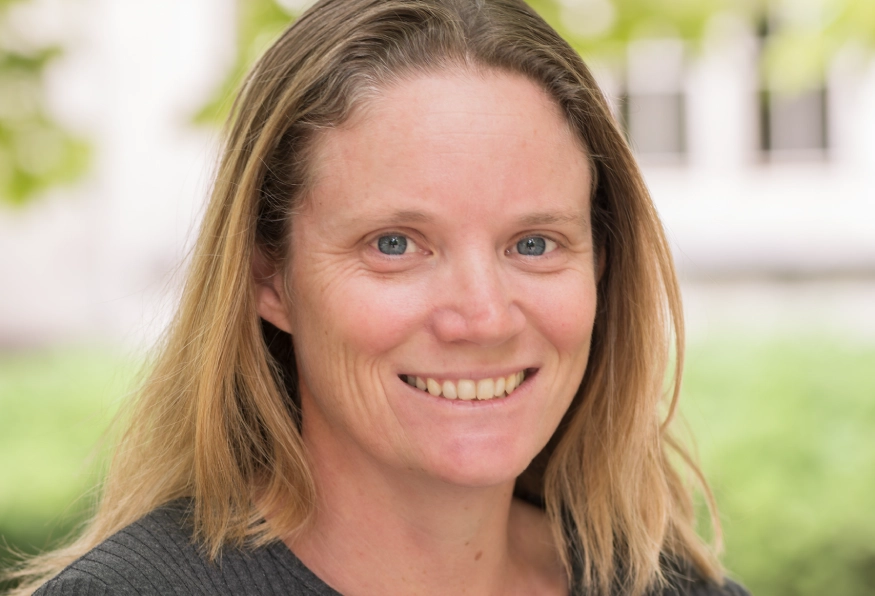
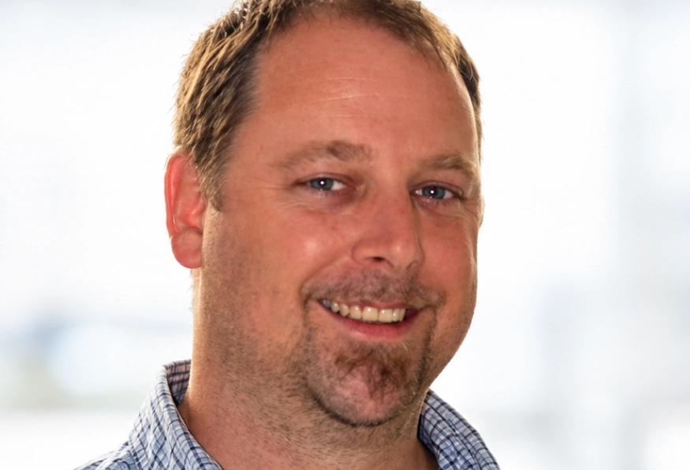
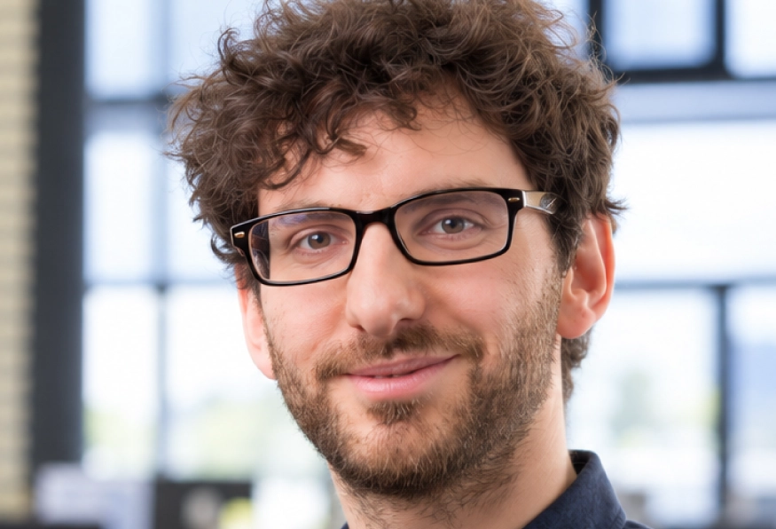
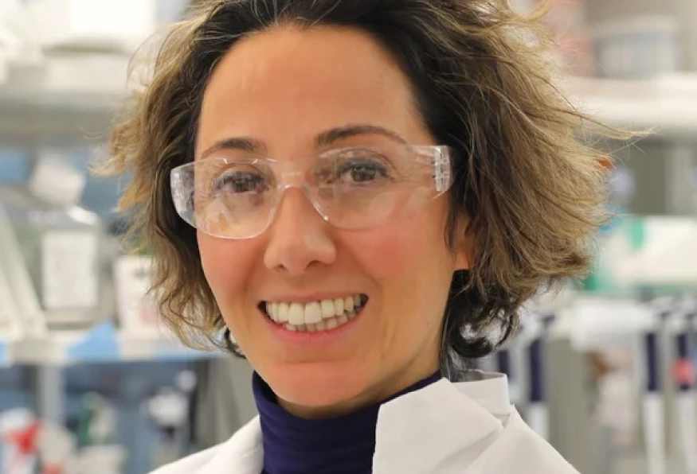
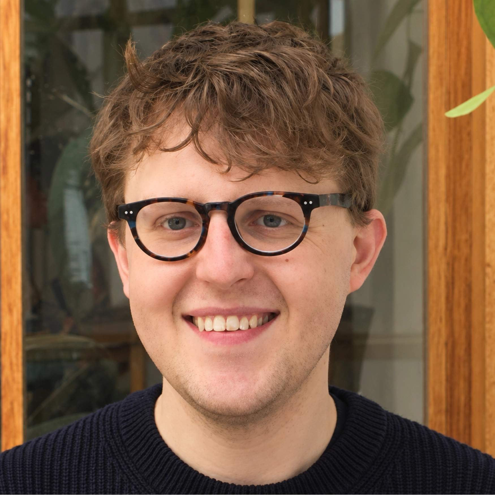

Professor Christine Wells
Academic Lead
Christine is Chair of Stem Cell Systems at the University of Melbourne. She is a computational stem cell researcher who builds tools to understand cell identity…
ORCID LINK ↗
Menhqi's doctoral thesis revolved around the need for a national (Australian) stem cell registry. Her research involved... [Suzy & Christine to provide details...]
Photography by Clickertie Portraita
The Australian Pluripotent Stem Cell Registry aims to build assurance in the cell line resources underpinning Australian stem cell research, by creating unambiguous digital identification and curated descriptions for every Australian stem cell line.

Academic Lead
Christine is Chair of Stem Cell Systems at the University of Melbourne. She is a computational stem cell researcher who builds tools to understand cell identity…
ORCID LINK ↗
Curator
Suzy is an academic specialist at the University of Melbourne. She is the curator of the Registry, and the first point of contact for stem cell researchers wishing to register…
ORCID LINK ↗Developer
Andrew is a Full Stack Developer at the University of Melbourne. He is a software engineer with a focus on building reliable applications and creating…
ORCID LINK ↗
Chief Investigator and Consultant
Noel is a senior developer for the Melbourne Data Analytics Platform at the University of Melbourne. He has provided technical development of the Registry…
ORCID LINK ↗
Data Research Specialist and Consultant
Daniel is a Senior Research Data Specialist for the Melbourne Data Analytics Platform at the University of Melbourne. He has provided advice on design…
ORCID LINK ↗
Data Linkages
Claire is a Masters of Bioinformatics student at the University of Melbourne. Her project is designed to connect registered lines with a molecular…
The Enabling Openness in Australian stem cell research is a project that brings together social scientists, philosophers, legal and ethics scholars together with digital specialists and stem cell researchers. EOAR is interested in the mechanisms that build trust in stem cell research and stem cell therapies, seeking to understand how Australian medical researchers find and access human stem cell resources. The registry was established in response to this research.
EOAR WEBSITE ↗MDAP enables data-intensive, data-informed and collaborative research across the University of Melbourne and its partners.
MELBOURNE DATA ANALYTICS PLATFORM WEB PAGES ↗Phenomics Australia is part of the NCRIS health group, which resources the technology platforms that drive discovery, innovation and translation of Australian medical research.
PHENOMICS AUSTRALIA WEBSITE ↗CTRL is the dynamic consent platform designed by Australian Genomics, and now supported for further development by the Garvan Institute for Medical Research.

We acknowledge funding to the Australian Pluripotent Stem Cell Registry from the Australian Government National Critical Research Infrastructure (NCRIS) via Phenomics Australia; the Medical Research Future Fund national critical digital infrastructure scheme (NCRIXXIV000085); and the University of Melbourne infrastructure scheme.